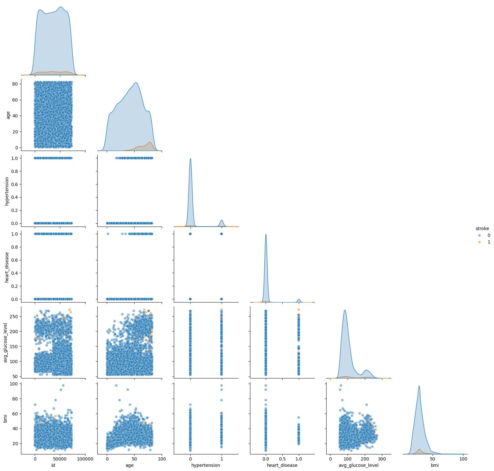
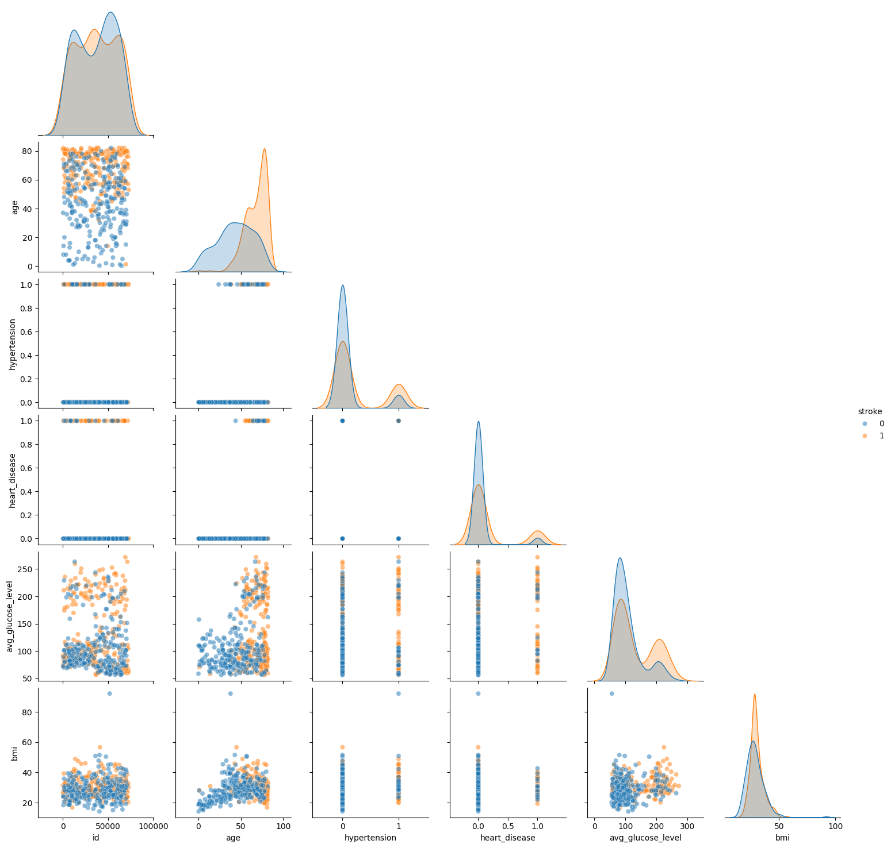
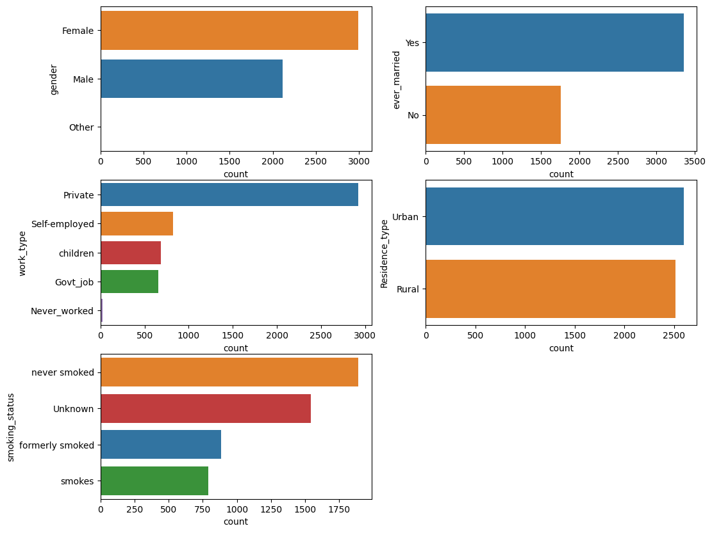
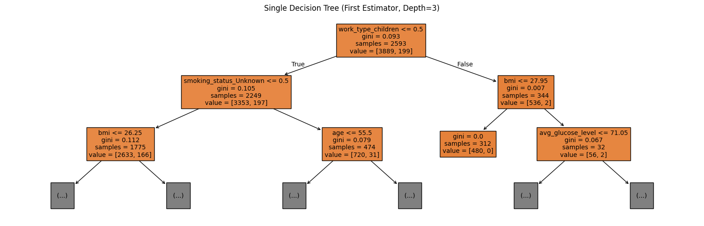
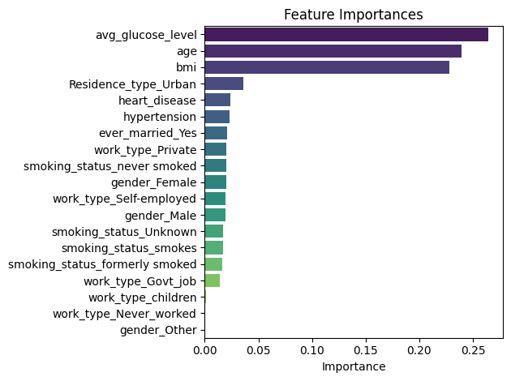
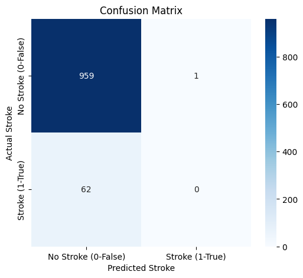
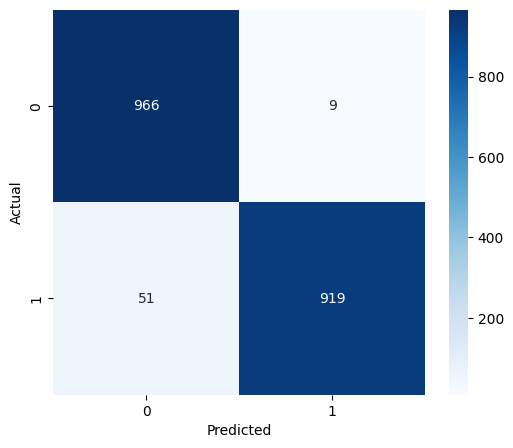

# For data manipulation
import numpy as np
import pandas as pd
# For plotting
import matplotlib.pyplot as plt
import seaborn as sns
# For ML
from sklearn.model_selection import train_test_split
from sklearn.ensemble import RandomForestClassifier
from sklearn.metrics import classification_report, confusion_matrix
from sklearn.preprocessing import OneHotEncoder
from sklearn.tree import plot_tree
from imblearn.over_sampling import SMOTEMachine Learning with Scikit-Learn**
Learning Objectives
- Load and inspect a real-world dataset using pandas to identify data types and missing values.
- Implement basic data cleaning techniques, such as imputing missing numerical values.
- Perform initial Exploratory Data Analysis (EDA) on numerical and categorical features using matplotlib and seaborn.
- Handle categorical features by applying One-Hot Encoding using scikit-learn’s OneHotEncoder.
- Split the data into training and testing sets for model evaluation.
- Train a Machine Learning (Random Forest) Classifier for a binary classification problem.
- Evaluate the model using key metrics like the Confusion Matrix and Classification Report.
- Identify the importance of Feature Engineering/Selection and Class Imbalance in real-world ML problems.
- Apply the SMOTE (Synthetic Minority Over-sampling Technique) to address class imbalance and assess its impact on model performance.
# Download some data https://www.kaggle.com/datasets/fedesoriano/stroke-prediction-dataset/data
!curl -L -o stroke-prediction-dataset.zip\
https://www.kaggle.com/api/v1/datasets/download/fedesoriano/stroke-prediction-dataset
!unzip stroke-prediction-dataset.zip
!ls % Total % Received % Xferd Average Speed Time Time Time Current
Dload Upload Total Spent Left Speed
0 0 0 0 0 0 0 0 --:--:-- --:--:-- --:--:-- 0
100 69007 100 69007 0 0 92663 0 --:--:-- --:--:-- --:--:-- 92663
Archive: stroke-prediction-dataset.zip
replace healthcare-dataset-stroke-data.csv? [y]es, [n]o, [A]ll, [N]one, [r]ename: A
inflating: healthcare-dataset-stroke-data.csv
healthcare-dataset-stroke-data.csv sample_data stroke-prediction-dataset.zip# Load the data
df = pd.read_csv("healthcare-dataset-stroke-data.csv")
df| id | gender | age | hypertension | heart_disease | ever_married | work_type | Residence_type | avg_glucose_level | bmi | smoking_status | stroke | |
|---|---|---|---|---|---|---|---|---|---|---|---|---|
| 0 | 9046 | Male | 67.0 | 0 | 1 | Yes | Private | Urban | 228.69 | 36.6 | formerly smoked | 1 |
| 1 | 51676 | Female | 61.0 | 0 | 0 | Yes | Self-employed | Rural | 202.21 | NaN | never smoked | 1 |
| 2 | 31112 | Male | 80.0 | 0 | 1 | Yes | Private | Rural | 105.92 | 32.5 | never smoked | 1 |
| 3 | 60182 | Female | 49.0 | 0 | 0 | Yes | Private | Urban | 171.23 | 34.4 | smokes | 1 |
| 4 | 1665 | Female | 79.0 | 1 | 0 | Yes | Self-employed | Rural | 174.12 | 24.0 | never smoked | 1 |
| ... | ... | ... | ... | ... | ... | ... | ... | ... | ... | ... | ... | ... |
| 5105 | 18234 | Female | 80.0 | 1 | 0 | Yes | Private | Urban | 83.75 | NaN | never smoked | 0 |
| 5106 | 44873 | Female | 81.0 | 0 | 0 | Yes | Self-employed | Urban | 125.20 | 40.0 | never smoked | 0 |
| 5107 | 19723 | Female | 35.0 | 0 | 0 | Yes | Self-employed | Rural | 82.99 | 30.6 | never smoked | 0 |
| 5108 | 37544 | Male | 51.0 | 0 | 0 | Yes | Private | Rural | 166.29 | 25.6 | formerly smoked | 0 |
| 5109 | 44679 | Female | 44.0 | 0 | 0 | Yes | Govt_job | Urban | 85.28 | 26.2 | Unknown | 0 |
5110 rows × 12 columns
# Explore the data (size, column names, data types, number of NaNs)
df.info()<class 'pandas.core.frame.DataFrame'>
RangeIndex: 5110 entries, 0 to 5109
Data columns (total 12 columns):
# Column Non-Null Count Dtype
--- ------ -------------- -----
0 id 5110 non-null int64
1 gender 5110 non-null object
2 age 5110 non-null float64
3 hypertension 5110 non-null int64
4 heart_disease 5110 non-null int64
5 ever_married 5110 non-null object
6 work_type 5110 non-null object
7 Residence_type 5110 non-null object
8 avg_glucose_level 5110 non-null float64
9 bmi 4909 non-null float64
10 smoking_status 5110 non-null object
11 stroke 5110 non-null int64
dtypes: float64(3), int64(4), object(5)
memory usage: 479.2+ KB# Deal with the missing data
bmi_median = df['bmi'].median()
df['bmi'] = df['bmi'].fillna(bmi_median)# Define Features (X) and Target (y)
target = 'stroke'
# Identify Categorical and Numerical columns automatically
categorical_cols = df.select_dtypes(include=['object']).columns.tolist()
numerical_cols = df.select_dtypes(include=['float64','int64']).columns.tolist()
print(f"Numerical Features: {numerical_cols}")
print(f"Categorical Features: {categorical_cols}")Numerical Features: ['id', 'age', 'hypertension', 'heart_disease', 'avg_glucose_level', 'bmi', 'stroke']
Categorical Features: ['gender', 'ever_married', 'work_type', 'Residence_type', 'smoking_status']plt.figure(figsize=(8, 8))
sns.pairplot(df[numerical_cols], hue='stroke',corner=True, plot_kws={'alpha': 0.5})
plt.show()<Figure size 800x800 with 0 Axes>
# Just for plotting, we can undersample the 0 (no-stroke) class.
num_ones = df['stroke'].value_counts()[1]
df_zeros_sampled = df[df['stroke'] == 0].sample(n=num_ones, random_state=42)
df_ones = df[df['stroke'] == 1]
new_df = pd.concat([df_ones, df_zeros_sampled])
plt.figure(figsize=(8, 8))
sns.pairplot(new_df[numerical_cols], hue='stroke',corner=True, plot_kws={'alpha': 0.5})
plt.show()<Figure size 800x800 with 0 Axes>
# Deal with the categorical columns
plt.figure(figsize=(12, 10))
for i, feature in enumerate(categorical_cols):
plt.subplot(3, 2, i + 1)
sns.countplot(y=df[feature], data=df, order=df[feature].value_counts().index, hue=df[feature])
print(f"{df[feature].value_counts()}\n")
plt.show()gender
Female 2994
Male 2115
Other 1
Name: count, dtype: int64
ever_married
Yes 3353
No 1757
Name: count, dtype: int64
work_type
Private 2925
Self-employed 819
children 687
Govt_job 657
Never_worked 22
Name: count, dtype: int64
Residence_type
Urban 2596
Rural 2514
Name: count, dtype: int64
smoking_status
never smoked 1892
Unknown 1544
formerly smoked 885
smokes 789
Name: count, dtype: int64

# Instantiate and Configure the OneHotEncoder
# We set 'sparse_output=False' so the output is a dense NumPy array,
# which is easier to convert directly into a pandas DataFrame.
ohe = OneHotEncoder(sparse_output=False, handle_unknown="ignore", drop='if_binary')
# Apply the encoding!
encoded_data = ohe.fit_transform(df[categorical_cols])
# 'get_feature_names_out' generates new meaningful column names (e.g., 'ever_married_Yes')
feature_names = ohe.get_feature_names_out(categorical_cols)
# create the New Encoded DataFrame
df_encoded = pd.DataFrame(encoded_data, columns=feature_names)
# df_encoded# Build the final dataframes we will use as target and feature vectors
X = pd.concat([df.drop(columns=categorical_cols+[target]+['id']),df_encoded],axis=1)
y = df[target]
X_train, X_test, y_train, y_test = train_test_split(X, y, test_size=0.2, random_state=42)# Define the Machine Learning method and hyperparamters
clf = RandomForestClassifier(n_estimators=100, random_state=42)
# Train the model
print("Training Random Forest model...")
clf.fit(X_train, y_train)
# Predict
predictions = clf.predict(X_test)
print("Done!")Training Random Forest model...
Done!plt.figure(figsize=(20, 6))
# Access the one of the trees (estimator) from the Random Forest
first_tree = clf.estimators_[0]
plot_tree(first_tree,
feature_names=X.columns,
filled=True,
max_depth=2, # Limit depth for readability
fontsize=10)
plt.title("Single Decision Tree (First Estimator, Depth=3)")
plt.show()
# What features are being most used to train the model
# Get names for numerical features
feature_names = X_train.columns
# Get feature importances from the model
importances = clf.feature_importances_
# Create a DataFrame for plotting
fi_df = pd.DataFrame({'Feature': feature_names, 'Importance': importances})
fi_df = fi_df.sort_values(by='Importance', ascending=False) #.head(10) # Top 10 features
sns.barplot(x='Importance', y='Feature', data=fi_df, hue='Feature', palette='viridis', legend=False)
plt.title("Feature Importances")
plt.ylabel(None)
plt.tight_layout()
plt.show()
# How is the model performing
cm = confusion_matrix(y_test, predictions)
plt.figure(figsize=(6,5))
sns.heatmap(cm, annot=True, fmt='d', cmap='Blues',
xticklabels=['No Stroke (0-False)', 'Stroke (1-True)'],
yticklabels=['No Stroke (0-False)', 'Stroke (1-True)'])
plt.xlabel('Predicted Stroke')
plt.ylabel('Actual Stroke')
plt.title('Confusion Matrix')
plt.show()
print("\nClassification Report:")
print(classification_report(y_test, predictions))
Classification Report:
precision recall f1-score support
0 0.94 1.00 0.97 960
1 0.00 0.00 0.00 62
accuracy 0.94 1022
macro avg 0.47 0.50 0.48 1022
weighted avg 0.88 0.94 0.91 1022
# Let's fix the class imbalance
sm = SMOTE(random_state=42)
X_res, y_res = sm.fit_resample(X, y)X_train_res, X_test_res, y_train_res, y_test_res = train_test_split(X_res, y_res, test_size=0.2, random_state=42)
clf_res = RandomForestClassifier(n_estimators=100, random_state=42)
clf.fit(X_train_res, y_train_res)
predictions_res = clf.predict(X_test_res)cm = confusion_matrix(y_test_res, predictions_res)
plt.figure(figsize=(6,5))
sns.heatmap(cm, annot=True, fmt='d', cmap='Blues')#,
# xticklabels=['At Risk', 'Healthy'],
# yticklabels=['At Risk', 'Healthy'])
plt.xlabel('Predicted')
plt.ylabel('Actual')
plt.show()
print("\nClassification Report:")
print(classification_report(y_test_res, predictions_res))
Classification Report:
precision recall f1-score support
0 0.95 0.99 0.97 975
1 0.99 0.95 0.97 970
accuracy 0.97 1945
macro avg 0.97 0.97 0.97 1945
weighted avg 0.97 0.97 0.97 1945